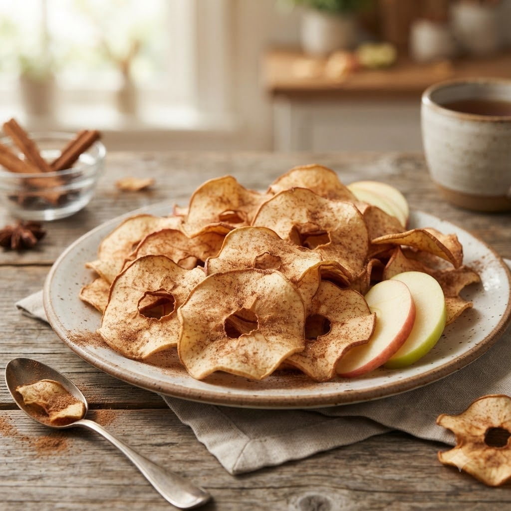

Cinnamon Apple Crisps

Cinnamon Apple Crisps
Airfryer – Bake 150°C 22 min — Serves 2
🔥 Airfryer🍽 Serves 2
Ingredients
- 2 apples, thinly sliced (core removed)
- 1/2 tsp cinnamon (dalchini) powder
- 1 tsp sugar (optional)
Method
1Preheat: Preheat the Airfryer to 150°C for 4 minutes before adding the food to the basket.
2Toss apple slices with cinnamon and sugar.
3Arrange in a single layer in the basket, without overlapping.
4Bake at 150°C for 22 minutes, flipping halfway, until dry and lightly golden.
5Cool completely — they crisp up further as they cool.
Tip: Slice apples as thinly and evenly as possible for even crisping.